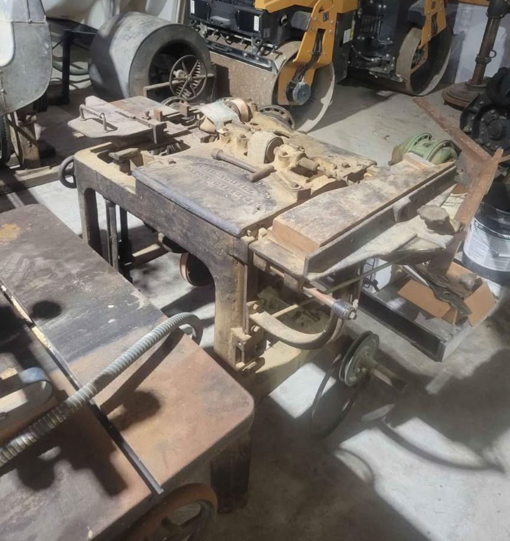
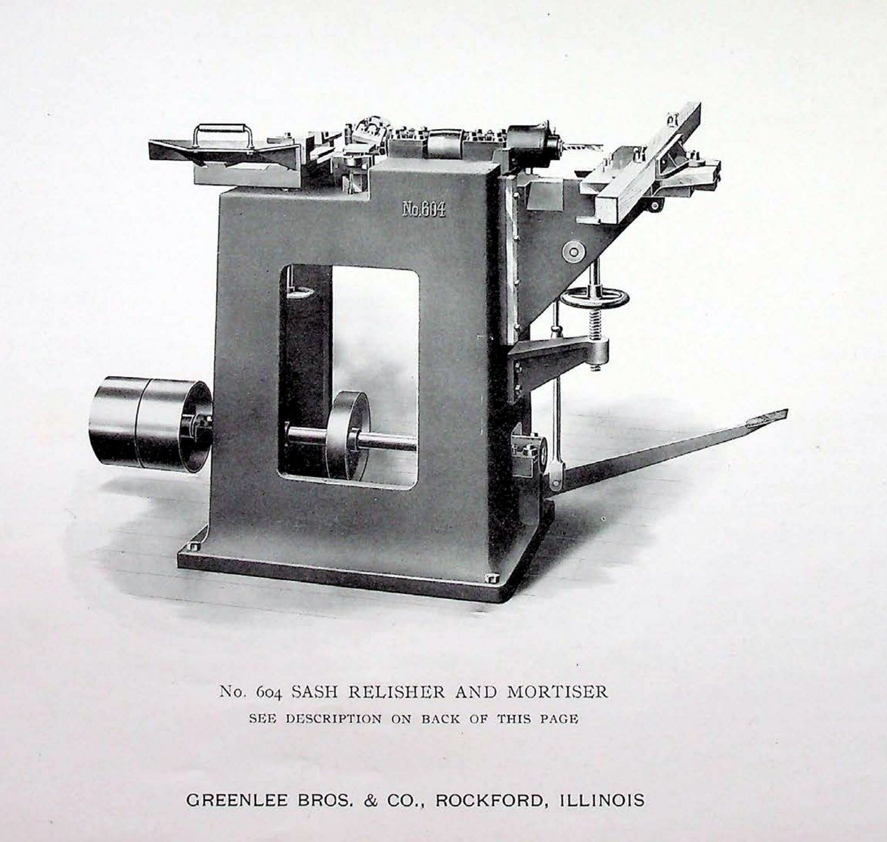

No. 604 Hauncher & Relisher
Hand-powered sash & door joinery · Chicago casting · c. 1890s

The machine
Hauncher and relisher are two verbs from the sash-and-door trade. To haunch a tenon is to step it down, leaving a short stub that fills the end of its groove without showing through the top of the stile. To relish is to cut away the waste beside the tenon so the shoulder seats tight against the mating face. Both are small, fussy cuts — the last quarter-inch of a joint, the part that decides whether a door corner stays square for a hundred years.
The No. 604 exists to make exactly those cuts and no others, which tells you nearly everything about the age that built it. This was an era when joinery mattered enough to deserve its own machine — not an attachment, not a jig, but a dedicated casting with a dedicated name.
This example
The casting predates the company’s 1904 move to Rockford: the pattern work is Chicago, from the first decades of Greenlee Bros. & Co. It is the oldest machine in the collection, and the only one that has never needed electricity — it is worked entirely by hand. When the power fails in the workshop, the No. 604 is unimpressed.
From the Catalog

“The original Sash Relisher and Mortiser was exhibited by us at the 1876 Philadelphia Exposition where it aroused universal interest and received the highest awards… no sash maker can afford to be without it.” Greenlee general-line catalog · 1930s
The catalog lists the 604 as the Sash Relisher and Mortiser — mortising on one table, relishing tenons on the other, a design Greenlee had been refining since the Centennial Exposition.
Catalog scan courtesy of VintageMachinery.org.